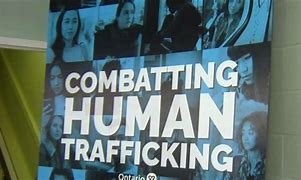
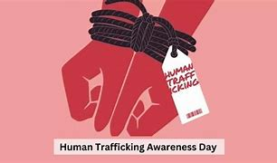

Human Trafficking
This is a website made to spread awareness about Human traficking. It is a horrible
crime that infringes upon a person's fundamental freedoms which are listed in Section 2 of the charter of rights.
To make this topic a little less depressing i have coded in a simple game in which you play as a baby reporting
a Human Trafficker.

Contents
In this website I will cover:
-What human Trafficking is
-Political thinking concepts regarding Human trafficking
-The 5 W's
-Awarness about Human traficking
-What different levels of government can do to combat human trafficking